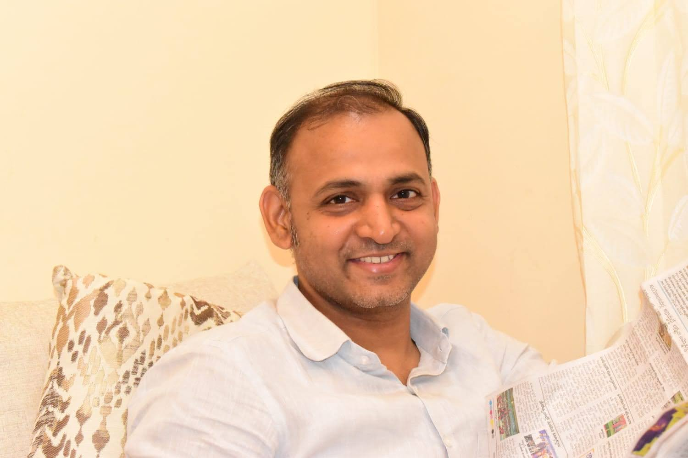

Coach Venu Babu Borra
Olympian | Gold Medalist | Former India #4 Doubles | Certified National Coach
Leading future champions at Adira Badminton Stadium – a world-class training hub.
Recent Coaching Achievements (2023)
- Indian Team Coach – U15 & U17 Asian Junior Championships, Chengdu, China
- Coach – All India BSNL Badminton Championships: Gold (Women’s Singles), Silver (Mixed Doubles)
- National Centre of Excellence, Guwahati – Junior World Camp with Head Coach Park Tae Sang & Ivan Sozonov
Past Coaching Highlights
- Coach – Indian Junior Team, Asian Championships, Surabaya (2019)
- Coach – Sub-Junior National Coaching Camps (2019), Bangalore
Player Rankings
- India No. 4 – U19 Girls Doubles (2004-05)
- India No. 7 – Women’s Doubles (2007-08)
- AP State No. 1 – Multiple Years (1999, 2004, 2005)
Awards
- Bharath Sanchar Kreeda Award (2007-08, 2009, 2015)
- Best Player – All India Senior Ranking Tournament, Sivakashi
Notable Milestones
- Teamed with Saina Nehwal – Jr. Girls Champion, South Zone Inter-State (2004)
- Multiple All India Junior & Senior Title Wins in Singles, Doubles & Mixed
- U19 Girls Doubles Winner – All India Junior Ranking, Begusarai
- Winner – CBSE National School Games (2000–2004)
- Quarterfinalist – Women’s Doubles, National Games at Guwahati
Performance at National Tournaments
- Winner – All India Senior Ranking (Women’s Doubles, Surat)
- Runner-up – All India Inter-University (Gwalior)
- Winner – Women’s Festival, Bhopal
- Runner-up – Mixed Doubles (Dehradun, Surat)
Achievements in 2016–2018
- Winner – Women’s Singles (BSNL 2016, 2018)
- Winner – Women’s Doubles (BSNL Bhopal)
- Runner-up – Mixed Doubles, Team Events
Training at Adira Badminton Stadium
Join Coach Venu’s elite training program for kids and teens at the Adira Badminton Stadium. Featuring:
- State-of-the-art courts & equipment
- Fitness & injury prevention programs
- Video analysis & tactical sessions
- Workshops by international coaches
Vision
"To create the next generation of Olympic-level badminton players from India by building a strong technical and mental foundation in young athletes."
Scan to view this profile online: